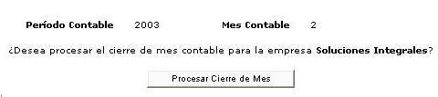

El cierre mensual corresponde al proceso que debe ser aplicado a fin de definir en el sistema la finalización de un periodo contable y el inicio de otro. Al cerrarse el período se permite obtener estadísticas referentes a los mismos. Los períodos cerrados no pueden ser afectados por ningún movimiento o asiento que se intenten aplicar desde el módulo de Contabilidad General. Además, en el proceso del cierre de mes contable son generados los saldos iniciales para el siguiente período. El sistema indica el período y mes contable.

Figura 1.Cierre de mes contable.
El proceso de cierre se ejecutara al hacer click en el botón "Procesar Cierre de Mes".